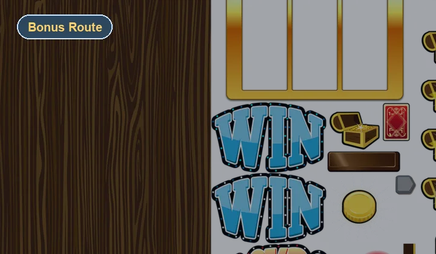
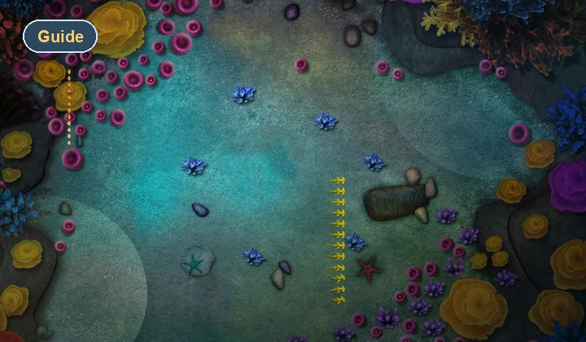

Controls
Mouse and touch both work
Click or tap the water to fire. You do not need a keyboard to play, which helps Deep Sea Mode feel friendly on both desktop and mobile browsers.
Play Route
Deep Sea Mode is the cleanest route into the Ocean Arcade Game experience. It keeps the fishing action central, gives the browser canvas more room to breathe, and still leaves space for helpful support content around the edges.
Play Now
Best use: start here if you want the strongest mix of onboarding clarity, ocean atmosphere, and immediate gameplay.
If you are learning the rhythm, watch the middle of the screen first and fire slightly ahead of each school.
Controls
Click or tap the water to fire. You do not need a keyboard to play, which helps Deep Sea Mode feel friendly on both desktop and mobile browsers.
Session Feel
This route is designed around the idea that browser arcade players often want a quick play loop. The layout makes that easy by putting the game before any long content blocks.
Related Games

Next Route
Stay with the same core fishing action but switch to a lane that feels faster and more aggressive.

Side Route
Take a break from ocean hunting with a bright slot-machine detour that still lives inside the same portal.

Article
Read a broader browser-fishing roundup if you want context for where this game sits in the category.
FAQ
Yes. Deep Sea Mode is the most direct route into the featured fishing experience on the portal.
Yes. The page stays responsive and the canvas scales within the frame on smaller screens.
No. The game runs in the browser with no install step.
Keep Going
If you want another quick run, switch to Ocean Hunter. If you want a change of pace, open Classic Arcade. If you want the category context behind the design, visit the blog.